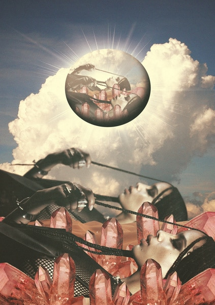

I've never been to Paris,
but I have this fantasy
Of going there every year
To see the cherry blossoms turn red
And to hear the weather sing: it's the weather for romance
If that doesn't make you think of the me then I don't know what does

With its romantic underbelly and its weather- singed heart
I have this fantasy, this second chance jest, of being able to tell a woman
That even though you like my music so much you still want to be with me
And maybe this time, instead of waiting for me to ask you how you're doing,
I'll just say it: I'm going to Paris
To give you a second chance.
To show that even though you hate my music so much you still want to be with me
To see and confirm that you still think of me and that

you still love me